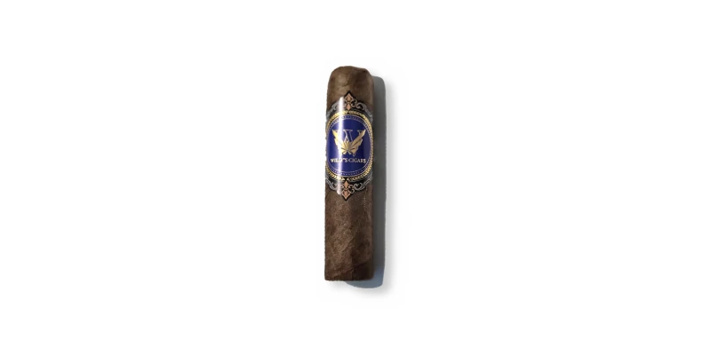

Willys Cigars · Shorty
De Willys Cigars · Área metro (Guaynabo / San Juan), Puerto Rico
Hecho a mano en Puerto Rico. Foto de Willys Cigars (oct 2026); nombre confirmado por Sergio; vitola y liga por confirmar.
Fuentes: 1
Ver Willys Cigars · Shorty en la app, califícalo y guárdalo en Mi Hoja.